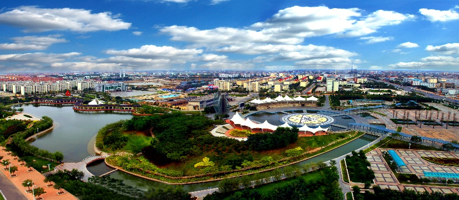

一线城市
- 上海
- 北京
- 广州
- 深圳
二线城市
- 天津
- 杭州
- 南京
- 成都
- 武汉
- 西安
- 重庆
- 沈阳
- 哈尔滨
- 乌鲁木齐
- 郑州
- 苏州
三线城市
- 昆明
- 长沙
- 大连
- 济南
- 兰州
- 青岛
- 无锡
- 太原
- 合肥
- 长春
- 福州
- 厦门
- 南宁
- 南昌
- 包头
- 海口
- 宁波
- 佛山
- 西宁
- 东莞
- 石家庄
- 呼和浩特
- 银川
- 温州
- 贵阳
- 洛阳
- 常州
- 徐州
- 唐山
- 吉林
- 柳州
- 株洲
- 潍坊
- 惠州
- 烟台
- 南通
- 大庆
- 鄂尔多斯
- 大同
- 湛江
- 桂林
- 齐齐哈尔
- 绵阳
- 常德
- 中山
- 淄博
- 衡阳
- 昆山（江苏省）
- 江阴（无锡）
- 张家港（苏州）
- 常熟（苏州）
四线城市
- 宜昌
- 珠海
- 九江
- 泉州
- 沧州
- 岳阳
- 长治
- 漳州
- 保定
- 秦皇岛
- 金华
- 马鞍山
- 黄石
- 赣州
- 威海
- 克拉玛依
- 汕头
- 邯郸
- 襄阳
- 开封
- 榆林
- 运城
- 临汾
- 阳泉
- 赤峰
- 东营
- 济宁
- 泰安
- 临沂
- 德州
- 聊城
- 滨州
- 平顶山
- 安阳
- 铜陵
- 新乡
- 焦作
- 许昌
- 南阳
- 宝鸡
- 咸阳
- 新余
- 荆门
- 孝感
- 荆州
- 黄冈
- 湘潭
- 郴州
- 娄底
- 清远
- 呼伦贝尔
- 乌海
- 潮州
- 江门
- 北海
- 三亚
- 梧州
- 玉林
- 玉林
- 自贡
- 泸州
- 德阳
- 乐山
- 南充
- 宜宾
- 凉山
- 渭南
- 延安
- 拉萨
- 鞍山
- 抚顺
- 本溪
- 营口
- 盘锦
- 四平
- 松源
- 鸡西
- 佳木斯
- 连云港
- 淮安
- 盐城
- 扬州
- 镇江
- 泰州
- 嘉兴
- 湖州
- 绍兴
- 忂州
- 舟山
- 台州
- 芜湖
- 蚌埠
- 淮南
- 通辽
- 张家口
- 安庆
- 滁州
- 廊坊
- 莆田
- 龙岩
- 邢台
- 宜春
- 上饶
- 茂名
- 肇庆
- 日照
- 松原
- 嘉峪关
- 吕梁
- 吴江（苏州）
- 晋江（泉州）
- 宜兴（无锡）
- 太仓（苏州）
- 慈溪（宁波）
- 瓦房店（大连）
- 龙口（烟台）
- 库尔勒（巴音郭楞）
- 诸暨（绍兴）
- 义乌（金华）
- 荣成（山东省）
- 增城（广州）
- 即墨（青岛）
- 海城（鞍山）
- 普兰店（大连）
- 庄河（大连）
- 温岭（台州）
- 平度（青岛）
- 寿光（潍坊）
- 福清（福州）
- 兴化（泰州）
- 余姚（宁波）
- 招远（烟台）
- 上虞（绍兴）
五线城市
- 牡丹江
- 绥化
- 双鸭山
- 承德
- 衡水
- 晋城
- 朔州
- 晋中
- 忻州
- 巴彦淖尔
- 乌兰察布
- 兴安
- 丹东
- 锦州
- 阜新
- 辽阳
- 铁岭
- 朝阳
- 葫芦岛
- 辽源
- 通化
- 鹤岗
- 伊春
- 七台河
- 黑河
- 宿迁
- 丽水
- 淮北
- 黄山
- 宿州
- 六安
- 池州
- 宣城
- 三明
- 南平
- 宁德
- 景德镇
- 萍乡
- 鹰潭
- 吉安
- 抚州
- 枣庄
- 莱芜
- 濮阳
- 漯河
- 三门峡
- 商丘
- 信阳
- 驻马店
- 十堰
- 鄂州
- 咸宁
- 随州
- 益阳
- 永州
- 怀化
- 韶关
- 河源
- 揭阳
- 阳江
- 梅州
- 钦州
- 来宾
- 防城港
- 百色
- 攀枝花
- 遂宁
- 内江
- 广安
- 雅安
- 资阳
- 遵义
- 毕节
- 曲靖
- 玉溪
- 贵港
- 贺州
- 丽江
- 普洱
- 临沧
- 楚雄
- 铜川
- 汉中
- 鹤壁
- 菏泽
- 周口
- 达州
- 白山
- 邵阳
- 张家界
- 商洛
- 金昌
- 白银
- 武威
- 张掖
- 平凉
- 酒泉
- 庆阳
- 广元
- 安顺
- 保山
- 白城
- 安康
- 阜阳
- 汕尾
- 云浮
- 六盘水
- 眉山
- 亳州
- 吴忠
- 中卫
- 桐乡（嘉兴）
- 石河子（新疆）
- 建德（杭州）
- 昌吉（昌吉）
- 三河（廊坊）
- 耒阳（衡阳）
- 满洲里（内蒙古）
- 库尔勒（巴音郭楞）
- 敦煌（甘肃省）
- 大理（大理）
- 文山（文山）
- 吐鲁番（吐鲁番）
- 哈密（哈密）
- 格尔木（青海省）
- 伊宁（伊犁）
- 阿克苏（阿克苏）
- 景洪（西双版纳）
- 延吉（延边）
- 鹤山（江门）
- 台山（江门）
- 石狮（泉州）
- 巢湖（合肥）
- 富阳（杭州）
- 江山（衢州）
- 长乐（福州）
- 临安（杭州）
- 仪征（扬州）
- 高邮（扬州）
- 东阳（金华）
- 二连浩特（内蒙古）
- 锡林浩特（锡林郭勒）
- 嵊州（绍兴）
- 滕州（枣庄）
- 兰溪（金华）
- 章丘（济南）
- 海宁（嘉兴）
- 彭州（成都）
- 邛崃（成都）
- 崇州（成都）
- 广汉（德阳）
- 什邡（德阳）
- 绵竹（德阳）
- 江油（绵阳）
- 喀什（喀什）
- 都匀（黔南）
- 文登（威海）
- 乳山（威海）
- 丹阳（镇江）
- 福安（宁德）
- 福鼎（宁德）
- 胶州（青岛）
- 奉化（宁波）
- 海门（南通）
- 启东（南通）
- 如皋（南通）
- 平湖（嘉兴）
- 南安（泉州）
- 临海（台州）
- 溧阳（常州）
- 瑞安（温州）
- 乐清（温州）
- 宣威（曲靖）
- 藁城（石家庄）
- 公主岭（吉林省）
- 长葛（许昌）
- 个旧（红河）
- 巩义（河南省）
- 武安（邯郸）
- 邹城（济宁）
- 贵溪（鹰潭）
- 麻城（黄冈）
- 永康（金华）
- 榆树（长春）
- 简阳（资阳）
- 天门（湖北省）
- 天长（安徽省）
- 英德（广东省）
- 仙桃（湖北省）
- 普宁（广东省）
六线城市
- 石嘴山
- 崇左
- 铜仁
- 天水
- 河池
- 恩施
- 昭通
- 固原
- 巴中
- 定西
- 海东
- 陇南
- 三沙
- 临夏（临夏）
- 吉首（湘西）
- 从化（广州）
- 浏阳（长沙）
- 泰兴（江苏省）
- 桂平（广西壮族自治区）
- 林州（安阳）
- 邓州（河南省）
- 北流（玉林）
- 丰城（宜春）
- 新泰（泰安）
- 廉江（湛江）
- 罗定（广东省）
- 安丘（山东省）
- 永城（河南省）
- 汝州（河南省）
- 义马（三门峡）
- 阳春（广东省）
- 项城（周口）
- 汉川（孝感）
- 定州（河北省）
- 诸城（潍坊）
- 潜江（湖北省）
- 青州（潍坊）
- 枣阳（襄阳）
- 钟祥（荆门）
- 晋州（石家庄）
- 肇东（绥化）
- 辛集（河北省）
- 新乐（石家庄）
- 迁安（河北省）
- 莱州（烟台）
- 黄骅（沧州）
- 莱阳（山东省）
- 东港（丹东）
- 凌海（锦州）
- 遵化（唐山）
- 北镇（锦州）
- 盖州（营口）
- 南宫（邢台）
- 大石桥（营口）
- 沙河（邢台）
- 灯塔（辽阳）
- 涿州（保定）
- 开原（铁岭）
- 安国（保定）
- 北票（朝阳）
- 高碑店（保定）
- 阆中（南充）
- 高密（潍坊）
- 乐平（景德镇）
- 兴宁（广东省）
- 恩施（恩施）
- 常宁（衡阳）
- 德惠（长春）
- 任丘（沧州）
- 鹿泉（石家庄）
- 河间（沧州）
- 泊头（沧州）
- 高安（宜春）
- 莱西（青岛）
- 瑞金（赣州）
- 临清（聊城）
- 灵宝（三门峡）
- 开平（江门）
- 栖霞（烟台）
- 荥阳（郑州）
- 舒兰（吉林）
- 石首（荆州）
- 大冶（黄石）
- 武冈（邵阳）
- 应城（孝感）
- 沅江（益阳）
- 乐陵（德州）
- 扶余（松原）
- 昌邑（潍坊）
- 都江堰（成都）
- 文昌（海南）
- 武穴（黄冈）
- 宜州（河池）
- 安陆（孝感）
- 利川（恩施）
- 大理（大理）
- 凤城（丹东）
- 樟树（宜春）
- 楚雄（楚雄）
- 丹江口（十堰）
- 清镇（贵阳）
- 南雄（广东省）
- 万源（达州）
- 琼海（海南）
- 宜城（襄阳）
- 万宁（海南）
- 兴城（葫芦岛）
- 禹城（德州）
- 沁阳（焦作）
- 老河口（襄阳）
- 洪江（怀化）
- 高要（肇庆）
- 凌源（朝阳）
- 博乐（博尔塔拉）
- 文山（文山）
- 宜都（宜昌）
- 蓬莱（烟台）
- 蛟河（吉林）
- 海林（牡丹江）
- 霸州（廊坊）
- 九台（长春）
- 冀州（衡水）
- 桦甸（吉林）
- 深州（衡水）
- 磐石（吉林）
- 双辽（四平）
- 高平（晋城）
- 梅河口（吉林省）
- 介休（晋中）
- 集安（通化）
- 永济（运城）
- 临江（白山）
- 河津（运城）
- 安达（绥化）
- 原平（忻州）
- 大安（白城）
- 霍州（临汾）
- 图们（延边）
- 孝义（吕梁）
- 敦化（延边）
- 汾阳（吕梁）
- 龙井（延边）
- 珲春（延边）
- 霍林郭勒（通辽）
- 和龙（延边）
- 双城（哈尔滨）
- 扎兰屯（呼伦贝尔）
- 尚志（哈尔滨）
- 五常（哈尔滨）
- 根河（呼伦贝尔）
- 讷河（齐齐哈尔）
- 丰镇（乌兰察布）
- 虎林（鸡西）
- 乌兰浩特（兴安盟）
- 铁力（伊春）
- 密山（鸡西）
- 洮南（白城）
- 富锦（佳木斯）
- 新民（沈阳）
- 宁安（牡丹江）
- 穆棱（牡丹江）
- 北安（黑河）
- 五大连池（黑河）
- 龙泉（丽水）
- 海伦（绥化）
- 桐城（安徽省）
- 新沂（徐州）
- 明光（滁州）
- 邳州（徐州）
- 界首（安徽省）
- 宁国（安徽省）
- 龙海（漳州）
- 东台（盐城）
- 大丰（盐城）
- 建瓯（南平）
- 漳平（龙岩）
- 扬中（镇江）
- 金坛（常州）
- 句容（镇江）
- 靖江（泰州）
- 瑞昌（九江）
- 东方（海南）
- 峨眉山（乐山）
- 舞钢（平顶山）
- 华蓥（广安）
- 资兴（郴州）
- 津市（常德）
- 孟州（焦作）
- 永安（三明）
- 牙克石（呼伦贝尔）
- 井冈山（吉安）
- 芒市（德宏）
- 开远（红河）
- 海阳（烟台）
- 曲阜（济宁）
- 肥城（泰安）
- 新密（郑州）
- 新郑（郑州）
- 登封（郑州）
- 偃师（洛阳）
- 卫辉（新乡）
- 辉县（新乡）
- 禹州（许昌）
- 济源（河南省）
- 当阳（宜昌）
- 枝江（宜昌）
- 洪湖（荆州）
- 松滋（荆州）
- 赤壁（咸宁）
- 广水（随州）
- 醴陵（株洲）
- 湘乡（湘潭）
- 韶山（湘潭）
- 汨罗（岳阳）
- 临湘（岳阳）
- 涟源（娄底）
- 乐昌（韶关）
- 恩平（江门）
- 雷州（湛江）
- 吴川（湛江）
- 高州（广东省）
- 化州（茂名）
- 信宜（茂名）
- 建阳（南平）
- 冷水江（娄底）
- 景洪（西双版纳）
- 德兴（上饶）
- 调兵山（铁岭）
- 武夷山（南平）
- 奎屯（伊犁）
- 凭祥（广西壮族自治区）
- 潞城（长治）
- 古交（太原）
- 四会（肇庆）
- 陆丰（汕尾）
- 福泉（黔南）
- 邵武（南平）
- 连州（清远）
- 乌苏（伊犁）
- 岑溪（广西壮族自治区）
- 侯马（临汾）
- 儋州（海南）
- 赤水（遵义）
- 仁怀（贵州省）
- 兴义（黔西南）
- 塔城（伊犁）
- 凯里（黔东南）
- 安宁（昆明）
- 蒙自（红河）
- 日喀则（日喀则）
- 合山（来宾）
- 阿拉尔（新疆）
- 共青城（九江）
- 阜康（昌吉）
- 瑞丽（德宏）
- 图木舒克（新疆）
- 同江（佳木斯）
- 东兴（防城港）
- 五指山（海南）
- 兴平（咸阳）
- 韩城（渭南）
- 华阴（渭南）
- 德令哈（海西）
- 灵武（银川）
- 青铜峡（吴忠）
- 阿图什（克州）
- 玉树（玉树）
- 阿勒泰（伊犁）
- 博乐（博尔塔拉）
- 和田（和田）
- 绥芬河（黑龙江省）
- 五家渠（新疆）
- 胡杨河（新疆）
- 可克达拉（新疆）
- 双河（新疆）
- 红星（新疆）
- 乌什水（新疆）
- 玉都（新疆）
- 额尔古纳（呼伦贝尔）
- 合作（甘南）
- 北屯（新疆）
- 阿尔山（兴安盟）
- 玉门（甘肃省）
- 阿拉山口（博尔塔拉）
指标设计
除了以下详细列出的肯德基和500强企业之外，我们还从公开资料中收集对比了包括民营500强企业分布、医院分布、典型连锁品牌分布等数据。从统计年鉴中对比了城市绿化率、财政收入等数据。
管辖面积和人口、人口净流出、航班数、火车站客流量和辖区内各等级公路通车里程都在我们的考察范围内。
肯德基指数
| 城市 | 肯德基 | 市辖区常住人口 | 密度 |
|---|---|---|---|
| 鞍山 | 9 | 150.5 | |
| 蚌埠 | 6 | 110 | |
| 北海 | 3 | 66.7 | |
| 北京 | 320 | 1882.73 | |
| 保定 | 14 | 103.82 | |
| 包头 | 12 | 222.24 | |
| 白山 | 2 | 61.2 | |
| 本溪 | 4 | 109.3 | |
| 长沙 | 54 | 361.75 | |
| 郴州 | 8 | 65.5 | |
| 成都 | 65 | 741.56 | |
| 重庆 | 43 | 795.36 | |
| 滁州 | 6 | 44.5 | |
| 常州 | 28 | 333.86 | |
| 长治 | 3 | 48.4 | |
| 沧州 | 7 | 48.86 | |
| 泊头 | 1 | 81 | |
| 赤峰 | 4 | 130 | |
| 常熟 | 12 | 151 | |
| 潮州 | 2 | 45.2 | |
| 慈溪 | 13 | 146.2 | |
| 长春 | 50 | 392 | |
| 德州 | 5 | 67.9 | |
| 东营 | 13 | 100.3 | |
| 大同 | 7 | 156 | |
| 东莞 | 81 | 694.7 | |
| 儋州 | 3 | 93.2 | |
| 德清县1 | 2 | 49.2 | |
| 大庆 | 12 | 164 | |
| 大连 | 47 | 408 | |
| 丹东 | 5 | 86 | |
| 鄂尔多斯2 | 5 | 80.8 | |
| 抚州 | 4 | 109 | |
| 佛山 | 55 | 720 | |
| 福州 | 25 | 296.3 | |
| 抚顺 | 6 | 163.8 | |
| 贵阳 | 12 | 303.4 | |
| 赣州2 | 5 | 142.9 | |
| 广州 | 168 | 1108 | |
| 桂林 | 11 | 97.4 | |
| 黄石 | 3 | 76.2 | |
| 怀化 | 6 | 55.3 | |
| 合肥 | 37 | 334 | |
| 淮北 | 4 | 111 | |
| 黄山 | 4 | 45 | |
| 淮安 | 16 | 263.4 | |
| 河源 | 5 | 46.5 | |
| 惠州 | 27 | 158 | |
| 海口 | 20 | 204.6 | |
| 邯郸3 | 11 | 144.4 | |
| 衡水 | 4 | 52.2 | |
| 呼和浩特 | 13 | 197.9 | |
| 海门 | 5 | 90.7 | |
| 海宁 | 5 | 80.7 | |
| 海盐县1 | 1 | 43.1 | |
| 杭州 | 97 | 599.3 | |
| 湖州 | 8 | 129 | |
| 哈尔滨 | 61 | 587.8 | |
| 葫芦岛 | 5 | 85 | |
| 荆州 | 6 | 115 | |
| 吉安 | 3 | 53.8 | |
| 景洪 | 2 | 37.1 | |
| 济南 | 56 | 433.5 | |
| 济宁 | 9 | 125 | |
| 晋城 | 3 | 47.7 | |
| 晋中 | 2 | 63.6 | |
| 江门 | 11 | 181 | |
| 江山 | 1 | 46.8 | |
| 江阴 | 1 | 159.5 | |
| 靖江 | 3 | 68.4 | |
| 晋江 | 9 | 198.6 | |
| 嘉兴 | 17 | 120 | |
| 金华 | 9 | 107.6 | |
| 佳木斯 | 4 | 88 | |
| 吉林 | 12 | 197.6 | |
| 昆明 | 29 | 385.4 | |
| 开封 | 5 | 63.3 | |
| 昆山 | 22 | 164.6 | |
| 娄底 | 4 | 49.7 | |
| 丽江 | 3 | 21.1 | |
| 溧阳 | 4 | 75 | |
| 兰州 | 14 | 263 | |
| 洛阳 | 8 | 192.4 | |
| 临沂 | 16 | 230.3 | |
| 柳州 | 7 | 143.6 | |
| 廊坊 | 9 | 86.7 | |
| 龙岩 | 4 | 66.2 | |
| 兰溪 | 2 | 56 | |
| 丽水 | 5 | 45.1 | |
| 辽阳 | 4 | 79 | |
| 绵阳 | 7 | 135.5 | |
| 马鞍山 | 11 | 74 | |
| 茂名 | 5 | 122 | |
| 梅州 | 6 | 93.4 | |
| 无锡 | 61 | 354.5 | |
| 牡丹江 | 6 | 96 | |
| 南昌 | 28 | 235.6 | |
| 南京 | 106 | 810.9 | |
| 南宁 | 20 | 343.6 | |
| 南通 | 20 | 227.4 | |
| 宁德 | 2 | 43 | |
| 宁波 | 48 | 349.2 | |
| 攀枝花 | 3 | 79 | |
| 莆田 | 11 | 195.4 | |
| 平湖 | 1 | 48.5 | |
| 盘锦 | 6 | 67.6 | |
| 曲靖 | 3 | 74 | |
| 青岛 | 64 | 458.6 | |
| 清远 | 5 | 81 | |
| 钦州 | 1 | 119.8 | |
| 衢州 | 4 | 80.5 | |
| 秦皇岛 | 11 | 103 | |
| 泉州 | 13 | 143.4 | |
| 七台河 | 1 | 62 | |
| 如皋 | 3 | 141 | |
| 宿州 | 3 | 164.7 | |
| 宿迁 | 9 | 144 | |
| 商丘 | 2 | 153 | |
| 汕尾 | 5 | 46 | |
| 韶关 | 6 | 100 | |
| 深圳 | 198 | 1054.7 | |
| 三亚 | 11 | 68.5 | |
| 三河 | 4 | 65.2 | |
| 石家庄 | 33 | 286 | |
| 苏州 | 76 | 407.4 | |
| 上海 | 314 | 2380.4 | |
| 三明 | 3 | 37 | |
| 石狮 | 4 | 63.7 | |
| 汕头 | 8 | 525.4 | |
| 上虞 | 5 | 78 | |
| 绍兴 | 15 | 88.3 | |
| 双鸭山 | 2 | 49 | |
| 绥芬河 | 1 | 13.2 | |
| 四平 | 3 | 61.3 | |
| 松原 | 4 | 61.2 | |
| 沈阳 | 82 | 625.7 | |
| 泰安 | 8 | 173.5 | |
| 太原 | 36 | 345.5 | |
| 台山 | 2 | 94.1 | |
| 唐山 | 28 | 338.5 | |
| 天津 | 128 | 1109.1 | |
| 太仓 | 8 | 71.2 | |
| 泰州5 | 12 | 160.5 | |
| 台州 | 20 | 190.1 | |
| 桐乡 | 6 | 81.6 | |
| 通化 | 4 | 50.6 | |
| 通辽 | 4 | 89.9 | |
| 武汉 | 74 | 978.5 | |
| 芜湖 | 12 | 140 | |
| 威海 | 10 | 84.4 | |
| 潍坊 | 10 | 204 | |
| 渭南 | 2 | 87.7 | |
| 乌海 | 1 | 53.2 | |
| 乌鲁木齐 | 15 | 196 | |
| 吴江 | 14 | 127.5 | |
| 温岭 | 7 | 136.7 | |
| 温州 | 25 | 303.9 | |
| 湘潭 | 4 | 96 | |
| 新余 | 1 | 84 | |
| 西昌 | 2 | 74 | |
| 宣城 | 4 | 77.2 | |
| 徐州 | 12 | 305.2 | |
| 新乡 | 7 | 105 | |
| 信阳 | 5 | 123 | |
| 许昌 | 5 | 49.8 | |
| 西宁 | 6 | 119.7 | |
| 西安 | 44 | 650.1 | |
| 咸阳 | 3 | 115 | |
| 邢台 | 5 | 67 | |
| 兴化 | 5 | 125.3 | |
| 厦门 | 45 | 353.1 | |
| 宜昌 | 9 | 141.1 | |
| 岳阳 | 10 | 123.1 | |
| 永州 | 4 | 100.7 | |
| 扬州5 | 16 | 240 | |
| 银川 | 9 | 129 | |
| 烟台 | 14 | 222 | |
| 兖州 | 1 | 62 | |
| 阳泉 | 4 | 72.2 | |
| 运城 | 3 | 68 | |
| 延安 | 3 | 47.5 | |
| 榆林 | 7 | 63.7 | |
| 阳春 | 2 | 84.9 | |
| 阳江 | 5 | 67.7 | |
| 盐城 | 22 | 161 | |
| 宜兴 | 10 | 123.5 | |
| 义乌 | 16 | 123.5 | |
| 余姚 | 8 | 101 | |
| 延吉 | 4 | 41.3 | |
| 营口 | 5 | 103.2 | |
| 遵义 | 3 | 109.4 | |
| 株洲 | 11 | 105.5 | |
| 郑州 | 44 | 282.2 | |
| 驻马店 | 2 | 72.2 | |
| 淄博 | 16 | 312.8 | |
| 增城 | 5 | 103.6 | |
| 湛江 | 8 | 161.1 | |
| 肇庆 | 10 | 64 | |
| 中山 | 26 | 312 | |
| 珠海 | 21 | 156 | |
| 张家口 | 8 | 105.9 | |
| 涿州 | 3 | 60.3 | |
| 张家港 | 12 | 124.8 | |
| 镇江 | 15 | 120 | |
| 漳州 | 7 | 70.5 | |
| 舟山 | 8 | 84.2 | |
| 诸暨 | 6 | 113.7 | |
|
500强企业分布
| 城市 | 500强企业数量 |
|---|---|
| 三明 | 1 |
| 上海 | 42 |
| 上虞 | 1 |
| 东营 | 1 |
| 个旧 | 1 |
| 临沂 | 1 |
| 丹阳 | 1 |
| 义马 | 1 |
| 乌鲁木齐 | 2 |
| 乐清 | 1 |
| 仁怀 | 1 |
| 仪征 | 1 |
| 佛山 | 2 |
| 保定 | 2 |
| 兖州 | 1 |
| 六盘水 | 1 |
| 鄂尔多斯 | 2 |
| 凌源 | 1 |
| 包头 | 2 |
| 北京 | 77 |
| 南京 | 6 |
| 南昌 | 5 |
| 厦门 | 8 |
| 合肥 | 5 |
| 吴江 | 1 |
| 呼和浩特 | 2 |
| 哈尔滨 | 3 |
| 唐山 | 3 |
| 嘉峪关 | 1 |
| 大同 | 1 |
| 大连 | 3 |
| 天津 | 5 |
| 太原 | 6 |
| 宁波 | 4 |
| 安阳 | 1 |
| 宜兴 | 1 |
| 宜宾 | 1 |
| 宜昌 | 1 |
| 宿州 | 1 |
| 宿迁 | 1 |
| 寿光 | 1 |
| 巩义 | 1 |
| 常州 | 1 |
| 平顶山 | 2 |
| 广州 | 10 |
| 廊坊 | 2 |
| 张家港 | 1 |
| 徐州 | 1 |
| 惠州 | 1 |
| 成都 | 5 |
| 扬州 | 1 |
| 攀枝花 | 1 |
| 新余 | 1 |
| 玉林 | 1 |
| 无锡 | 1 |
| 昆明 | 3 |
| 昌吉 | 1 |
| 昭通 | 1 |
| 晋城 | 1 |
| 曲靖 | 1 |
| 本溪 | 1 |
| 杭州 | 14 |
| 柳州 | 3 |
| 株洲 | 1 |
| 格尔木 | 1 |
| 桐乡 | 1 |
| 武安 | 1 |
| 武汉 | 10 |
| 永城 | 1 |
| 沈阳 | 2 |
| 泸州 | 1 |
| 洛阳 | 1 |
| 济南 | 4 |
| 济宁 | 1 |
| 济源 | 1 |
| 海口 | 4 |
| 淮南 | 1 |
| 深圳 | 27 |
| 湖州 | 1 |
| 湘潭 | 1 |
| 漯河 | 1 |
| 潍坊 | 2 |
| 烟台 | 2 |
| 龙口 | 1 |
| 焦作 | 1 |
| 珠海 | 1 |
| 盘锦 | 1 |
| 石家庄 | 2 |
| 福州 | 2 |
| 福清 | 1 |
| 绵阳 | 1 |
| 聊城 | 1 |
| 芜湖 | 2 |
| 苏州 | 2 |
| 蚌埠 | 1 |
| 衢州 | 1 |
| 西宁 | 4 |
| 诸暨 | 1 |
| 贵溪 | 1 |
| 连云港 | 1 |
| 邢台 | 1 |
| 邹城 | 1 |
| 郑州 | 3 |
| 重庆 | 5 |
| 铜陵 | 2 |
| 长春 | 4 |
| 长沙 | 4 |
| 长治 | 1 |
| 长葛 | 1 |
| 阳泉 | 1 |
| 青岛 | 2 |
| 鞍山 | 1 |
| 韶关 | 1 |
| 马鞍山 | 1 |
| 黄石 | 1 |
| |
航空交通
| 机场名称 | 旅客吞吐量 | 比上年变化（%） | 货邮吞吐量 | 比上年变化（%） | ||||||||
|---|---|---|---|---|---|---|---|---|---|---|---|---|
| 北京首都国际机场 | 81,929,352 | 4.1 | 1,799,864 | 9.7 | ||||||||
| 广州白云国际机场 | 48,309,410 | 7.3 | 1,248,764 | 5.8 | ||||||||
| 上海浦东国际机场 | 44,880,164 | 8.3 | 2,938,157 | -4.8 | ||||||||
| 上海虹桥国际机场 | 33,828,726 | 2.2 | 429,814 | -5.3 | ||||||||
| 成都双流国际机场 | 31,595,130 | 8.7 | 508,031 | 6.4 | ||||||||
| 深圳宝安国际机场 | 29,569,725 | 4.7 | 854,901 | 3.2 | ||||||||
| 昆明长水国际机场 | 23,979,259 | 7.7 | 262,272 | -3.7 | ||||||||
| 西安咸阳国际机场4 | 23,420,654 | 10.7 | 174,783 | 1.3 | ||||||||
| 重庆江北国际机场 | 22,057,003 | 15.8 | 268,642 | 13.1 | ||||||||
| 杭州萧山国际机场 | 19,115,320 | 9.2 | 338,371 | 10.5 | ||||||||
| 厦门高崎国际机场 | 17,354,076 | 10.1 | 271,466 | 4.2 | ||||||||
| 长沙黄花国际机场 | 14,749,701 | 7.8 | 110,608 | -3.7 | ||||||||
| 南京禄口国际机场 | 14,001,476 | 7.1 | 248,068 | 0.6 | ||||||||
| 武汉天河国际机场 | 13,980,527 | 12.2 | 128,196 | 4.4 | ||||||||
| 乌鲁木齐地窝堡国际机场 | 13,347,188 | 20.5 | 131,373 | 22.1 | ||||||||
| 大连周水子国际机场 | 13,337,184 | 11.0 | 136,547 | -1.0 | ||||||||
| 青岛流亭国际机场 | 12,601,152 | 7.6 | 171,892 | 3.2 | ||||||||
| 郑州新郑国际机场 | 11,673,612 | 15.0 | 151,194 | 47.1 | ||||||||
| 三亚凤凰国际机场 | 11,343,387 | 9.5 | 52,604 | 8.9 | ||||||||
| 沈阳桃仙国际机场 | 11,011,800 | 7.6 | 131,931 | -1.5 | ||||||||
| 海口美兰国际机场 | 10,696,585 | 5.2 | 99,945 | 2.2 | ||||||||
| 哈尔滨太平国际机场 | 9,143,823 | 16.6 | 85,948 | 12.4 | ||||||||
| 贵阳龙洞堡国际机场 | 8,746,034 | 19.2 | 79,587 | 15.1 | ||||||||
| 天津滨海国际机场 | 8,139,988 | 7.8 | 194,241 | 6.2 | ||||||||
| 福州长乐国际机场 | 7,851,966 | 9.1 | 96,948 | 10.7 | ||||||||
| 济南遥墙国际机场 | 7,664,111 | -2.7 | 74,070 | -4.6 | ||||||||
| 南宁吴圩国际机场 | 7,032,312 | 8.8 | 78,134 | 15.5 | ||||||||
| 太原武宿国际机场 | 6,813,265 | 16.0 | 42,259 | 6.4 | ||||||||
| 南昌昌北国际机场 | 6,018,223 | 12.5 | 37,857 | 10.3 | ||||||||
| 长春龙嘉国际机场 | 5,819,581 | 17.1 | 66,214 | 6.4 | ||||||||
| 桂林两江国际机场 | 5,687,449 | 3.6 | 33,762 | 0.4 | ||||||||
| 温州永强国际机场 | 5,637,303 | 0.7 | 49,714 | 1.5 | ||||||||
| 呼和浩特白塔国际机场 | 5,435,237 | 25.5 | 28,674 | 13.7 | ||||||||
| 宁波栎社国际机场 | 5,266,738 | 5.0 | 61,662 | 4.9 | ||||||||
| 合肥骆岗国际机场 | 5,194,178 | 18.1 | 42,602 | 10.9 | ||||||||
| 石家庄正定国际机场 | 4,852,071 | 20.7 | 39,661 | 19.4 | ||||||||
| 兰州中川机场 | 4,583,509 | 20.3 | 35,947 | 12.2 | ||||||||
| 银川河东机场 | 3,809,550 | 12.8 | 26,901 | 13.3 | ||||||||
| 北京南苑机场 | 3,459,887 | 30.8 | 30,054 | 27.6 | ||||||||
| 苏南硕放国际机场2 | 3,238,638 | 10.2 | 84,027 | 26.9 | ||||||||
| 烟台莱山国际机场 | 2,984,465 | 17.2 | 37,234 | -7.7 | ||||||||
| 丽江三义机场 | 2,884,335 | 32.1 | 6,951 | 59.1 | ||||||||
| 西宁曹家堡机场 | 2,664,488 | 31.2 | 15,278 | 28.6 | ||||||||
| 西双版纳嘎洒国际机场 | 2,307,830 | 20.3 | 4,888 | 1.5 | ||||||||
| 泉州晋江机场 | 2,149,502 | 8.8 | 35,711 | 14.4 | ||||||||
| 揭阳潮汕机场1 | 2,103,303 | 10.6 | 10,647 | 4.8 | ||||||||
| 珠海金湾机场 | 2,090,491 | 16.3 | 16,270 | -3.0 | ||||||||
| 拉萨贡嘎机场 | 1,829,792 | 15.7 | 15,339 | 35.2 | ||||||||
| 鄂尔多斯伊金霍洛机场 | 1,800,572 | 38.3 | 9,752 | 62.7 | ||||||||
| 九寨黄龙机场 | 1,752,937 | 2.1 | ||||||||||
| 包头二里半机场 | 1,625,870 | 20.8 | 9,265 | 23.7 | ||||||||
| 张家界荷花机场 | 1,135,202 | -1.1 | 2,225 | 7.2 | ||||||||
| 喀什机场 | 1,086,340 | 19.0 | 4,744 | 28.0 | ||||||||
| 常州奔牛机场 | 1,078,444 | 15.5 | 11,058 | 32.2 | ||||||||
| 榆林榆阳机场 | 1,066,322 | 17.1 | 2,408 | 83.5 | ||||||||
| 延吉朝阳川机场 | 1,059,528 | 4.3 | 5,391 | 9.7 | ||||||||
| 呼伦贝尔海拉尔机场 | 1,011,775 | 41.9 | 4,045 | 35.4 | ||||||||
| 徐州观音机场 | 974,120 | 15.1 | 6,069 | 23.1 | ||||||||
| 义乌机场3 | 936,785 | 22.9 | 2,697 | -21.0 | ||||||||
| 运城张孝机场 | 923,691 | 23.2 | 2,430 | 10.8 | ||||||||
| 威海大水泊机场 | 912,220 | -2.5 | 5,093 | 11.4 | ||||||||
| 宜昌三峡机场 | 901,366 | 15.9 | 3,996 | 6.0 | ||||||||
| 柳州白莲机场 | 773,459 | 28.7 | 6,214 | 23.4 | ||||||||
| 临沂沭埠岭机场 | 735,463 | 10.4 | 4,098 | 28.0 | ||||||||
| 洛阳北郊机场 | 719,845 | 103.0 | 1,061 | -8.4 | ||||||||
| 北海福成机场 | 713,555 | 2.1 | 4,260 | 5.8 | ||||||||
| 武夷山机场 | 690,236 | 16.1 | 1,658 | 97.4 | ||||||||
| 德宏芒市机场 | 689,594 | 36.2 | 4,882 | 24.2 | ||||||||
| 绵阳南郊机场 | 681,217 | 9.4 | 4,935 | 9.9 | ||||||||
| 腾冲驼峰机场 | 643,901 | 24.3 | 885 | -9.8 | ||||||||
| 赣州黄金机场 | 601,658 | 16.8 | 4,567 | 54.9 | ||||||||
| 库尔勒机场 | 595,413 | 43.4 | 2,346 | 10.8 | ||||||||
| 伊宁机场 | 553,839 | 14.4 | 1,669 | 134.2 | ||||||||
| 黄山屯溪机场 | 547,703 | 17.7 | 1,885 | 31.9 | ||||||||
| 湛江坡头机场 | 517,236 | 5.8 | 2,428 | 15.4 | ||||||||
| 长治王村机场 | 501,890 | 21.8 | 1,617 | -1.5 | ||||||||
| 连云港白塔埠机场 | 483,768 | 5.0 | 1,388 | 1.0 | ||||||||
| 阿克苏机场 | 483,563 | 17.3 | 1,114 | 33.6 | ||||||||
| 舟山普陀山机场 | 464,077 | 20.6 | 425 | 48.3 | ||||||||
| 大庆萨尔图机场 | 452,966 | 12.1 | 2,288 | 18.0 | ||||||||
| 和田机场 | 452,676 | 26.1 | 1,409 | 10.9 | ||||||||
| 迪庆香格里拉机场 | 429,495 | 14.6 | 460 | -10.2 | ||||||||
| 景德镇罗家机场 | 425,538 | 19.6 | 1,022 | 50.7 | ||||||||
| 台州路桥机场 | 403,997 | -35.7 | 4,385 | -29.0 | ||||||||
| 襄阳刘集机场 | 402,244 | 97.4 | 1,025 | 67.6 | ||||||||
| 井冈山机场 | 401,601 | 32.8 | 1,575 | 40.4 | ||||||||
| 赤峰玉龙机场 | 394,830 | 29.6 | 1,245 | 144.4 | ||||||||
| 牡丹江海浪机场 | 392,205 | 25.2 | 1,473 | 6.2 | ||||||||
| 南通兴东机场 | 386,021 | 54.7 | 11,105 | 70.9 | ||||||||
| 大理机场 | 377,934 | 37.7 | 596 | -37.4 | ||||||||
| 西昌青山机场 | 366,534 | -29.8 | 2,306 | -31.5 | ||||||||
| 锡林浩特机场 | 361,245 | 39.5 | 1,379 | 209.4 | ||||||||
| 淮安涟水机场 | 346,867 | 50.5 | 1,910 | 22.7 | ||||||||
| 通辽机场 | 343,840 | 93.2 | 1,485 | 25.2 | ||||||||
| 乌海机场 | 322,195 | 41.9 | 1,220 | 71.5 | ||||||||
| 盐城南洋机场 | 316,913 | 36.4 | 2,842 | 22.3 | ||||||||
| 敦煌机场 | 315,570 | 26.8 | 183 | 33.1 | ||||||||
| 泸州蓝田机场 | 311,774 | 9.4 | 2,138 | -11.8 | ||||||||
| 佳木斯东郊机场 | 309,034 | 45.2 | 616 | -18.8 | ||||||||
| 宜宾菜坝机场 | 305,217 | -6.2 | 2,761 | 0.8 | ||||||||
| 南阳姜营机场 | 290,782 | 28.1 | 812 | 19.9 | ||||||||
| 常德桃花源机场 | 283,296 | -8.2 | 162 | 1.4 | ||||||||
| 大同倍加皂机场 | 282,456 | 30.1 | 2,134 | 18.6 | ||||||||
| 济宁曲阜机场 | 281,287 | 48.5 | 366 | 41.7 | ||||||||
| 万州五桥机场 | 278,409 | 10.8 | 1,741 | -13.0 | ||||||||
| 嘉峪关机场 | 272,703 | 22.8 | 946 | 53.6 | ||||||||
| 满洲里西郊机场 | 270,564 | 19.2 | 1,710 | 11.9 | ||||||||
| 南充高坪机场 | 259,124 | 51.6 | 1,378 | 98.1 | ||||||||
| 扬州泰州机场5 | 247,314 | 1,567 | ||||||||||
| 恩施许家坪机场 | 241,775 | 41.5 | 1,421 | 16.9 | ||||||||
| 林芝米林机场 | 220,031 | 53.0 | 696 | 45.8 | ||||||||
| 达州河市机场 | 218,001 | 1.0 | 2,161 | 8.4 | ||||||||
| 普洱思茅机场 | 213,168 | -10.6 | 692 | -5.7 | ||||||||
| 阜阳机场 | 206,782 | 20.1 | 131 | 1,384.4 | ||||||||
| 乌兰浩特机场 | 203,496 | 44.7 | 745 | 231.6 | ||||||||
| 长白山机场 | 198,290 | 55.5 | 219 | 729.2 | ||||||||
| 齐齐哈尔三家子机场 | 190,089 | 26.7 | 858 | 25.2 | ||||||||
| 衢州机场 | 190,077 | 27.6 | 470 | 78.2 | ||||||||
| 阿勒泰机场 | 186,377 | 1.7 | 132 | 134.9 | ||||||||
| 佛山沙堤机场 | 183,032 | 28.6 | 2,840 | 29.1 | ||||||||
| 丹东浪头机场 | 179,780 | 35.8 | 1,404 | 62.4 | ||||||||
| 邯郸机场 | 169,554 | 10.0 | 70 | 558.2 | ||||||||
| 唐山三女河机场 | 166,897 | 10.5 | 906 | -9.9 | ||||||||
| 库车龟兹机场 | 160,849 | 195.3 | 103 | 181.1 | ||||||||
| 秦皇岛山海关机场 | 155,438 | -18.8 | 606 | 73.4 | ||||||||
| 保山云端机场 | 155,276 | 1.1 | 368 | 20.0 | ||||||||
| 延安二十里堡机场 | 153,030 | 36.5 | 61 | 58.2 | ||||||||
| 布尔津喀纳斯机场 | 143,827 | 10.0 | 3 | 135.2 | ||||||||
| 潍坊机场 | 139,634 | 0.1 | 17,083 | -8.6 | ||||||||
| 临沧机场 | 136,393 | 14.6 | 495 | -1.1 | ||||||||
| 鸡西兴凯湖机场 | 131,775 | 47.1 | 260 | -11.2 | ||||||||
| 锦州小岭子机场 | 130,510 | 27.0 | 1,120 | -7.1 | ||||||||
| 昌都邦达机场 | 126,771 | 48.8 | 402 | 37.8 | ||||||||
| 东营机场 | 119,736 | 76.1 | 477 | 396.2 | ||||||||
| 巴彦淖尔天吉泰机场 | 115,550 | 26,524.4 | 657 | |||||||||
| 漠河古莲机场 | 114,142 | 44.3 | 85 | 100.3 | ||||||||
| 广元盘龙机场 | 107,312 | 25.8 | 185 | 4.7 | ||||||||
| 黑河机场 | 105,068 | 16.0 | 168 | 52.3 | ||||||||
| 二连浩特赛乌苏机场 | 104,650 | 31.3 | 75 | 947.3 | ||||||||
| 哈密机场 | 104,159 | 43.4 | 98 | 149.6 | ||||||||
| 玉树巴塘机场 | 98,481 | 29.9 | 606 | 1,667.0 | ||||||||
| 怀化芷江机场 | 93,851 | 6.3 | 39 | 725.0 | ||||||||
| 安庆天柱山机场 | 90,559 | 18.8 | 255 | -3.4 | ||||||||
| 格尔木机场 | 90,070 | 27.8 | 275 | 65.7 | ||||||||
| 中卫香山机场 | 87,734 | -0.9 | 52 | 12.1 | ||||||||
| 黔江武陵山机场 | 83,832 | 286.6 | 50 | |||||||||
| 铜仁凤凰机场 | 81,442 | 87.5 | 55 | -53.9 | ||||||||
| 文山普者黑机场 | 75,373 | -10.6 | 85 | -32.2 | ||||||||
| 九江庐山机场 | 73,258 | -14.2 | 318 | 290.7 | ||||||||
| 伊春林都机场 | 68,946 | 54.9 | 43 | 220.7 | ||||||||
| 兴义机场 | 57,534 | -7.5 | 33 | -25.5 | ||||||||
| 梅县长岗岌机场 | 52,672 | -14.4 | 36 | 28.2 | ||||||||
| 阿尔山伊尔施机场 | 51,978 | 4,699.4 | 29 | |||||||||
| 连城冠豸山机场 | 50,229 | 5.3 | 0 | -100.0 | ||||||||
| 梧州长洲岛机场 | 47,731 | 46.6 | 25 | 70.8 | ||||||||
| 新源那拉提机场 | 47,457 | 83.8 | 21 | 1,042.4 | ||||||||
| 遵义新舟机场 | 46,512 | |||||||||||
| 朝阳机场 | 43,803 | 184.8 | 2 | |||||||||
| 昭通机场 | 40,447 | -27.0 | 40 | -20.3 | ||||||||
| 克拉玛依机场 | 37,590 | -17.9 | 54 | 883.3 | ||||||||
| 甘孜康定机场 | 33,473 | 21.2 | ||||||||||
| 金昌金川机场 | 30,288 | 434.1 | 1 | 3,202.8 | ||||||||
| 塔城机场 | 29,995 | 17.8 | 7 | 219.2 | ||||||||
| 博乐阿拉山口机场 | 27,538 | 49.7 | 29 | 2,792.1 | ||||||||
| 张掖甘州机场 | 25,520 | 870.3 | 1 | |||||||||
| 加格达奇机场 | 23,428 | 1 | ||||||||||
| 日喀则和平机场 | 22,519 | 96.4 | 5 | 28.1 | ||||||||
| 黎平机场 | 20,574 | 42.2 | 4 | 116.7 | ||||||||
| 百色右江机场 | 19,443 | -26.4 | ||||||||||
| 吐鲁番交河机场 | 19,417 | 130.5 | ||||||||||
| 阿里昆莎机场 | 18,166 | 94.3 | 52 | 347.8 | ||||||||
| 固原六盘山机场 | 17,126 | -40.6 | ||||||||||
| 鞍山腾鳌机场 | 16,134 | 4,957.7 | ||||||||||
| 永州零陵机场 | 12,056 | -57.1 | 6 | -10.7 | ||||||||
| 安顺黄果树机场 | 9,541 | 124.4 | ||||||||||
| 天水麦积山机场 | 8,477 | 70.7 | 11 | 398.7 | ||||||||
| 荔波机场7 | 5,182 | 3.4 | 0 | -93.4 | ||||||||
| 庆阳机场 | 3,819 | |||||||||||
| 长海大长山岛机场 | 2,613 | -25.7 | ||||||||||
| 汉中西关机场 | 91 | -93.7 | ||||||||||
| ||||||||||||
铁路旅客日均发送量
| 城市 | 旅客日均发送量 |
|---|---|
| 北京 | 271865 |
| 广州 | 190448 |
| 上海 | 178841 |
| 武汉 | 115474 |
| 深圳 | 95234 |
| 成都 | 94278 |
| 郑州 | 87212 |
| 沈阳 | 85357 |
| 南京 | 82614 |
| 杭州 | 82013 |
| 西安 | 79845 |
| 哈尔滨 | 75202 |
| 天津 | 65982 |
| 长沙 | 65885 |
| 太原 | 63912 |
| 长春 | 60997 |
| 南昌 | 53916 |
| 合肥 | 53511 |
| 重庆 | 55258 |
| 石家庄 | 54863 |
| 济南 | 47874 |
| 昆明 | 38208 |
| 福州 | 35210 |
| 贵阳 | 34457 |
| 大连 | 34013 |
| 徐州 | 27187 |
| 厦门 | 26905 |
| 南宁 | 26392 |
| 兰州 | 25707 |
| 青岛 | 25232 |
| 宁波 | 24012 |
| 乌鲁木齐 | 23835 |
| 齐齐哈尔 | 22833 |
| 吉林 | 21231 |
| 达州 | 20268 |
| 株洲 | 23204 |
| 阜阳 | 18821 |
| 呼和浩特 | 18005 |
| 怀化 | 16622 |
| 义乌 | 16555 |
| 襄樊 | 16204 |
| 洛阳 | 16058 |
| 宜昌 | 15009 |
| 衡阳 | 14844 |
| 柳州 | 14729 |
| 岳阳 | 14220 |
| 九江 | 13739 |
| 金华 | 13168 |
| 东莞 | 12800 |
| 锦州 | 12601 |
| 信阳 | 12155 |
| 桂林 | 11968 |
| 南充 | 11162 |
| 鹰潭 | 10973 |
| 西宁 | 10832 |
| 徐州 | 10386 |
| 赣州 | 10089 |
| 烟台 | 9530 |
| 绵阳 | 9443 |
| 漯河 | 9145 |
| 海口 | 8941 |
| 三亚 | 8878 |
| 银川 | 8474 |
| 福州 | 8409 |
| 娄底 | 8045 |
| 温州 | 7981 |
| 驻马店 | 7930 |
| 郴州 | 7530 |
| 吉安 | 7336 |
| 郴州 | 7309 |
| 衡阳 | 6979 |
| 遵义 | 6746 |
| 萍乡 | 5991 |
| 万州 | 5724 |
| 吉首 | 5722 |
| 新余 | 5372 |
| 宜春 | 5371 |
| 张家界 | 5211 |
| 永州 | 5067 |
| 攀枝花 | 4851 |
| 广元 | 4837 |
| 韶关 | 4727 |
| 荆门 | 4623 |
| 常德 | 4466 |
| 耒阳 | 4358 |
| 佛山 | 4329 |
| 孝感 | 3966 |
| 益阳 | 3829 |
| 咸宁 | 3306 |
| 广安 | 3257 |
| 邵阳 | 3165 |
| 麻城 | 3066 |
| 铜仁 | 2896 |
| 拉萨 | 2503 |
| 内江 | 2202 |
| 鄂州 | 1909 |
| 广水 | 1816 |
| 安庆 | 1753 |
| 咸宁 | 1033 |
| 赤壁 | 857 |
| 汨罗 | 807 |
说明
有趣的数据
- 城市和县域发展最不均衡的省份是广东：县域经济占比仅为8.48%，倒数第二的黑龙江也比广东高出一倍，江苏则高达38.57%。
- 人均GDP前10的城市中，没有直辖市或省会城市：克拉玛依、阿拉善盟、鄂尔多斯、东营、大庆、格尔木、包头、无锡、苏州、嘉峪关。

东营市黄河广场
- 昆明、乌鲁木齐和拉萨的GDP都比省内第二的城市高一倍左右，而最强的省会当属成都，四川第二的绵阳仅有成都的1/6。
- 河北唐山，内蒙古包头，山东青岛和辽宁大连，是在GDP总量和人均GDP上都超越所属省省会的“B牌城市”，“蒙K”鄂尔多斯更是内蒙GDP总量和人均GDP的双料冠军。
鄂尔多斯市东胜区祥云水上公园
- “豫B”开封的GDP总量在河南18个地级市中排名13，人均GDP也仅排名12。
- 作为省会，GDP总量被挤到省内第3的有两个：山东济南和内蒙古呼和浩特。
- 非省会城市中东莞拥有81间肯德基，昆山则是县级市中最多的。
昆山市城市广场
- 泉州的GDP低于其下辖的县级市晋江，类似的，金华下辖的义乌也超过了金华市市辖区。

晋江全景
- 内蒙古的人均GDP排全国第5，高于浙江；内蒙古城镇居民人均可支配收入在全国排第10，超过作为直辖市的重庆。
- 同属海西蒙古族藏族自治州的德令哈和格尔木两个县级市，人均GDP相差约8倍；同属宜昌市的猇亭区和秭归县，人均GDP差距是15倍；参考对比，韩国人均收入是朝鲜的19倍；而同属新疆的克拉玛依和和田，这个差距是30倍。
行政区 GDP 人均GDP 海西蒙古族藏族自治州 德令哈市 10.5 16104 格尔木市 290 130265 - 城镇居民人均可支配收入最高的是东莞，排名前30位中只有6个非沿海城市：包头、鄂尔多斯、济南、呼和浩特、东营和马鞍山。

马鞍山市秀山新区
- 除内蒙古外，西部省份城市中，只有宝鸡、咸阳、昆明和延安4个城市超过全国城镇居民人均可支配收入平均水平。
- 非省会城市中，拥有300米以上建筑的城市有8个：大连（中心裕景383米）、无锡（国金中心339米）、温州（世贸中心333米）、江阴（空中华西村328米）、烟台（世茂海湾323米）、芜湖（侨鸿广场318米）、常州（传媒中心309米）、柳州（地王中心303米），其中江阴是唯一一个县级市。
在建中的常州传媒中心
- 天津人均水资源占有量约为200立方米，只有新疆的1/25，西藏的1/800。
- 三沙是中国人口最少的城市，同时也是中国最年轻、面积最大和水域面积最大的城市。
三沙市永兴岛
- 中国最大的地级市是内蒙古呼伦贝尔市，面积26万平方千米，约等于8个海南岛，比最小的安徽省铜陵市大250倍。
- 山东寿光是中国生产蔬菜最多的城市，总产量约占全国的1/200。
- 湖北丹江口人均公园绿地面积60.24平方米，全国的平均水平是11.8平方米，广东普宁只有0.38平方米。
丹江口市沧浪洲湿地公园
- 中国公园数量最多的城市是深圳，有841个公园，同时肯德基密度也是全国最高，平均53191个深圳人就有1间肯德基。
- 高速公路最密集的省份是江苏省，平均每万平方公里有402千米的高速公路，约是西藏的1300倍，新疆的45倍。
- 桂林是中国拥有最多5A景区的城市，一共有3个：漓江风景区、乐满地度假世界、独秀峰靖江王城景区。
- 北京拥有最多的56所大学，而武汉拥有最多的在读本科生人数，有88.1万人，与整个大庆市辖区人口相当。
- 除了深圳和珠海外，第一批经济特区一共有4个，还包括汕头和厦门。

汕头市海湾大桥
- 中国一共有5个计划单列市：大连、青岛、宁波、厦门和深圳。
- 经国务院批准，拥有地方立法权的“较大的市”包括：唐山、大同、包头市、大连、鞍山、抚顺、吉林、齐齐哈尔、青岛、无锡、淮南、洛阳、宁波、淄博、邯郸、本溪、徐州和苏州。

齐齐哈尔市劳动湖
- 有5个地级市和县级市一样，没有设立任何市辖区，包括：中山、东莞，三亚、三沙和嘉峪关。
- 镇江曾经是江苏省会，河北的张家口曾经是内蒙古的首府。
- 除上海北京外，汽车产量最高的城市是柳州，市辖区常住人口143.6万的柳州生产出了167万辆汽车，约等于两个辽宁省的产量。
柳州市城中区
- 位于宁波的镇海炼化是中国最大的炼油厂，每12桶进口原油中，就有1桶会送往宁波进行深加工。
- 粤C珠海是广东常住人口最少、面积最小的城市。
- 除省会城市外，拥有地铁的城市包括佛山、苏州和昆山，在建的包括东莞、宁波、青岛和无锡。
- 历史文化名城最多的省份是江苏，共有11个；而海口是唯一一个拥有两处历史文化名城的城市：海口市和琼山区。

海口市
- 有3个非省会城市拥有外国领事馆：厦门、青岛和二连浩特。
- 不少城市拥有远离市区的飞地市辖区，多见于北方城市，如：邯郸的峰峰矿区、东营市河口区、齐齐哈尔碾子山区、郑州上街区、洛阳吉利区、平顶山石龙区、承德鹰手营子矿区、石家庄井陉矿区、阜新清河门区。

邯郸市龙湖公园
- 汕尾市城区和晋城市城区是名字真的就是“城区”的市辖区；佳木斯市郊区是名字真的就是“郊区”的市辖区；阳泉市辖区有三个，分别是：城区、矿区和郊区。

佳木斯市沿江公园
- 加格达奇区位于内蒙古自治区鄂伦春自治旗境内，但在行政上隶属于黑龙江省，是大兴安岭地区行政公署所在地。
- 江苏、山东和浙江三省拥有最多的百强县，最强的前5个县级行政区全部连片集中在江苏：江阴市、昆山市、张家港市、常熟市和太仓市。
- 仁怀市白酒工业总产值308.3亿元，占该市规模工业总产值的97.3%，其中茅台酒厂占该市GDP的80.7%。
- 格尔木市辖区总面积126220.5平方公里，与福建省相当，由柴达木盆地中南部和唐古拉山镇两块互不相连，中间相隔400多公里的辖区组成。
- 阿拉山口市是人口倒数第二的城市（三沙倒数第一），常住人口只有约1万人，但它是中国最大的陆路口岸，过货量超过2600万吨，同时也是人均GDP最高的县级市。
- 昆山市是GDP最高的县级市，2012年GDP达到2725亿，超过宁夏省，接近海南省。
统计范围
本统计的范畴为我国目前施行的行政区划制度中的所有以“市”结尾的行政区，包括“直辖市”“地级市”和“县级市”：
- 省、自治区、直辖市、特别行政区；
- 地级市、自治州、地区、盟，直辖市的市辖区、县；
- 县级市、县、自治县、旗。
包括以下省直管县中的县级市，以及新疆建设兵团管理的县级市：
| 海南 | 五指山、琼海、儋州、文昌、万宁、东方 |
|---|---|
| 吉林 | 公主岭、梅河口 |
| 新疆 | 石河子、阿拉尔、图木舒克、五家渠、北屯、铁门关 |
| 河南 | 济源、巩义、汝州、邓州、永城 |
| 湖北 | 仙桃、潜江、天门 |
副地级市在本统计中不做单列统计，列入“县级市”范畴，包括：
| 河北 | 辛集、定州 |
|---|---|
| 内蒙古 | 满洲里、二连浩特 |
| 河南 | 济源 |
| 湖北 | 仙桃、潜江、天门 |
| 青海 | 格尔木 |
包括新疆建设兵团拟建六市：胡杨河、可克达拉、双河、红星、乌什水和玉都。
撤市设区的兖州（济宁）、南康（赣州）、吴江（苏州）、姜堰（泰州）及胶南（青岛）不做独立列出，视同所属市市辖区进行统计。
释义
- 本统计中的“地级市”，指的是市辖区部分，不包含其下属的各县和县级市，如泉州下辖石狮、晋江、南安，在本统计中“泉州”二字仅指不含县级市和县域部分的泉州市市辖区：
行政区 GDP 人均GDP 泉州 鲤城区 824.99 58994 丰泽区 洛江区 泉港区 晋江 908.73 69775 石狮 370.21 95294 南安 482.14 37868 惠安县 不在统计范围 安溪县 永春县 德化县 金门县 - 对于“不设区的地级市”：东莞、中山，三亚、三沙和嘉峪关，本统计中指的是其所辖区域的全部部分。
- 本统计中的“县级市”，指的是其下辖各街道、乡镇、居委会和村委会部分。在本统计中，与其所属的地级市市辖区，做同级并列对比。
- 对于“自治州”“地区”“盟”等不作为整体列入统计，但其下辖的“县级市”列入统计。如：在本统计中，“喀什”特指“喀什地区”下属的县级市“喀什市”：
行政区 人口 面积 喀什地区 喀什市 350'000 555 疏附县 不在统计范围 疏勒县 英吉沙县 泽普县 莎车县 叶城县 麦盖提县 岳普湖县 伽师县 巴楚县 塔什库尔干塔吉克自治县 -
本统计中涉及“人数”概念时，使用的均为“市辖区范围内常住人口”，而非“户籍人口”：
城市 户籍人口 常住人口 阜阳 1011.8 759.9 厦门 180.2 353.1 - 对于大多数县级市，由于缺乏公开数据和实地考查，仅量化考察总人口数、地方财政收入和生产总值三大指标。
- 对除海南外省直管县级市或副地级市，有上调，具体包括：
- 湖北省
- 天门
- 仙桃
- 潜江
- 河南省
- 济源
- 巩义
- 汝州
- 邓州
- 永城
- 新疆
- 石河子
- 阿拉尔
- 图木舒克
- 五家渠
- 北屯
- 铁门关
- 吉林省
- 公主岭
- 梅河口
- 甘肃省
- 敦煌
- 玉门
- 青海省
- 格尔木
- 河北省
- 定州
- 辛集
- 迁安
- 黑龙江省
- 绥芬河
- 贵州省
- 仁怀
- 安徽省
- 宁国
- 桐城
- 界首
- 天长
- 广西壮族自治区
- 岑溪
- 桂平
- 凭祥
- 内蒙古蒙古族自治区
- 二连浩特
- 满洲里
- 江苏省
- 昆山
- 泰兴
- 山东省
- 莱阳
- 安丘
- 荣成
- 广东省
- 阳春
- 高州
- 英德
- 普宁
- 罗定
- 南雄
- 兴宁
- 湖北省
- 对自治州首府驻地（如延吉、文山、伊宁）、辖区范围特别大的县级市（如日喀则、格尔木、石河子），或沿边经济特区（如东兴、喀什、瑞丽），有上调；
- 对特大城市所属或周边的县级市（如从化、普兰店、即墨），有下调。